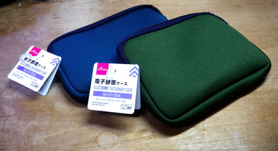
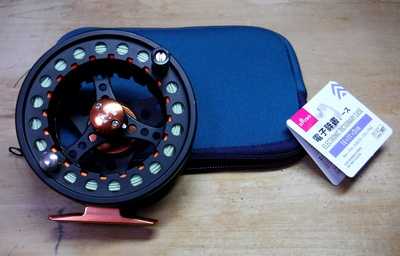
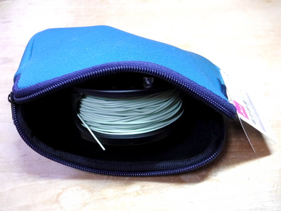
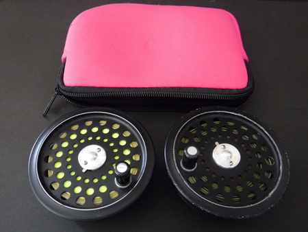
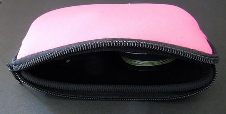

私のお気に入り
釣り道具 ネオプレン製 フライリールケース ダイソー社
このところは、釣り具店に行くよりも百円ショップに行くことの方が多くなり、いろいろと釣りに流用・代用できる商品を探すのが楽しみになっている。
スマホ用品やらパソコン用品のコーナー、目立たない陳列棚の１番下で見つけたのがこの商品。ネオプレン製の電子辞書用ケースである。

僕が見つけた時には、ブルーとモスグリーンの２色があり、幅約17cm、高さ約13cmである。長方形だけれど、これだけ広がるのであれば、フライリールがすぽっと入るのでは？ と思い、２つ色違いで買って来た。
さっそく MaxCatch 社の ECHO 7/8 リールを入れて見ると、ぴったりと収まった。

ネオプレンの生地も丈夫そうで、縫製も良くできている。ジッパーのツマミが小さいので、ジッパータグを付けた方が使いやすくなるだろう。

ケースの形状が円形ではないので若干左右が余るが、
そこはご愛敬であろう。
アマゾンでネオプレン製フライリールケースを探すと、ノーブランドのもので１個300円ほどするので、良い買い物であった。
日本のフライタックルブランドの製品には1,000円ほど、アメリカの有名ブランドの製品には、9,000円以上の値段が付いており、『狂っている.....』と思わされた。（笑）
追記
ダイソーのネオプレン製の電子辞書用ケースは、その後店頭で見かけなくなったのだが、別の百円ショップ、Seria ? だったか近所のローカル百均で、同等の製品を売っていた。

ラージアーバータイプでは無い、昔のハーディー #6 のスペアスプールが、２個ぴったりと収納できる。今日のラージアーバータイプリールならば、#4 くらいなら２個入るだろう。
もっとも、傷つき防止の観点からは、リール／スプールを１つだけ入れる方が良いとは思う。

私のお気に入り 目次へ
サイトマップ
ホームへ
お問い合わせ